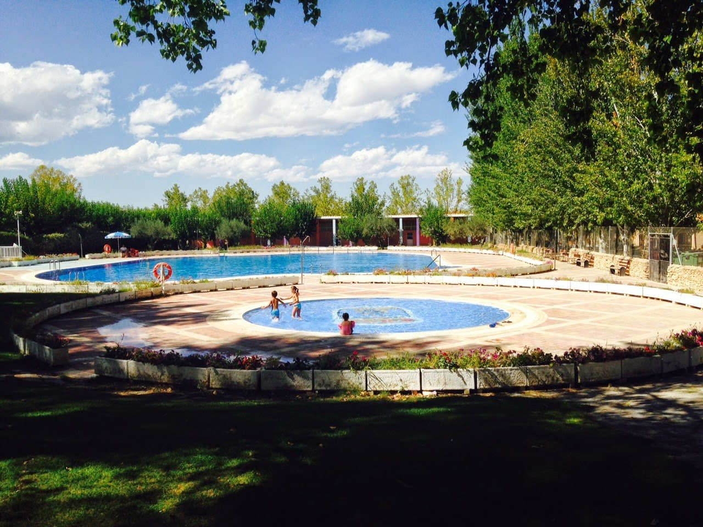
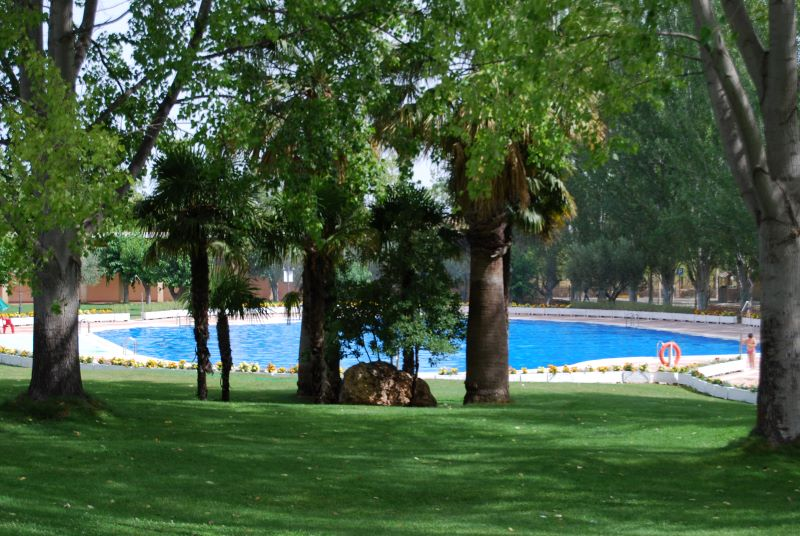
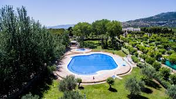
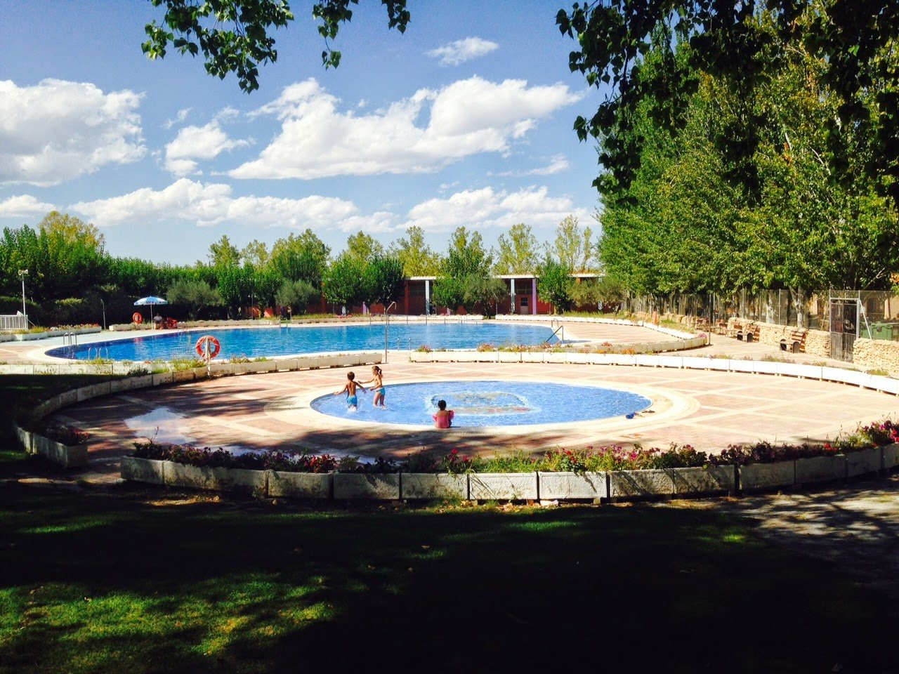
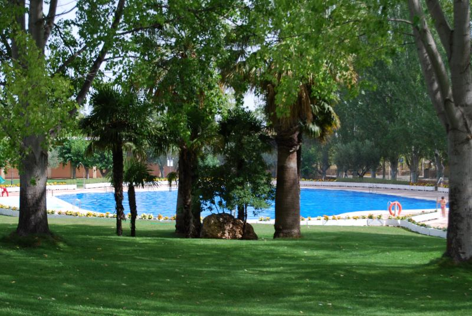
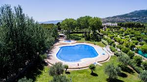

Turismo de Bullas - Verano
+34 688 66 66 66
turismoBullas@info.com
+34 688 66 66 66
turismoBullas@info.com
 





INFORMACION
En este espacio natural, que en su día fue estación sericícola, se hallaba la
emblemática Fuente de la Rafa que a través de su canalización aseguraba el
abastecimiento de agua en Bullas desde época medieval.
Hoy día La Rafa ofrece numerosos servicios a los visitantes y usuarios de la Ruta:
camping, apartamentos, restaurante, piscina, instalaciones deportivas… y
es origen de varios senderos de pequeño recorrido. También en este paraje
se ha instalado el Centro de Agroecología y Medio Ambiente (CEAMA).
QUE HACER
En la VII Muestra de teatro infantil de navidad en Bullas se podrá disfrutar de
las obras de teatro: 26 de diciembre. BAMBI. 6 euros. 29 de diciembre. CATAPLAN.
4 euros. 02 de enero. CHATUNGLA. 3 euros. Lugar: La Rafa
La música tradicional de los "Animeros de San Blas" dará la bienvenida al primer
Mercadillo de 2024, y en el día en que EL ZACATIN cumple 30 años. En su entorno
habitual de Plazas Vieja y del Castillo, ...
Exposiciones, mercadillos, rutas, experiencias gastronómicas...